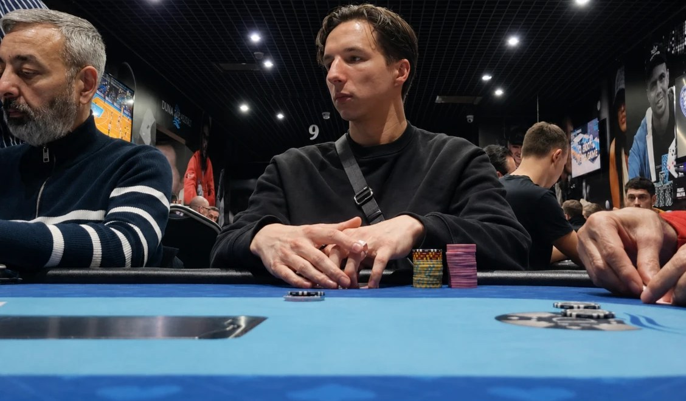

Vincent Bellepaume, coach poker et fondateur de La Salle du Temps
Je vis pleinement du poker depuis 6 ans.
Le poker m'a permis de quitter mon job alimentaire à KFC, de payer mes dettes à cause des loyers impayés pour m'installer là où je le voulais, et de vivre de ma passion en toute liberté. Après être passé par Montréal, Vegas et Malte, je vis aujourd'hui à Budapest.
J'aide les joueurs à devenir rentables et à générer un revenu régulier grâce au poker
Ce que je fais de mieux, c'est accompagner les joueurs à passer de perdant ou break-even à libre financièrement, en moyenne entre 1500 et 5000 € par mois grâce au poker, suivant le temps qu'ils passent aux tables.
Si tu te demandes en quoi je suis légitime pour t'aider, la suite te concerne :
Il y a quelques années, j'étais endetté et je ne gagnais pas un centime au poker
En 2015, je sors du lycée et je me lance dans les études supérieures. Très vite, je comprends que ce n'est pas fait pour moi. J'enchaîne les filières en espérant trouver ma voie, mais c'est toujours pareil : je commence motivé, puis je décroche.
Au bout de quatre ans, je me retrouve endetté, avec des loyers impayés et un découvert bancaire. Je dois retourner vivre chez mes parents et prendre un boulot alimentaire au KFC pour éponger mes dettes.
C'est pendant le confinement que je découvre le poker. Je ne gagne rien au début, je grinde les micro-limites en NL2 et NL5, mais ce jeu devient vite une obsession. Les ranges, l'analyse de profils, la psychologie, tout me fascine.
En 2021, je prends la décision la plus folle de ma vie
Après avoir travaillé une année de plus pour financer ma bankroll, j'investis plusieurs milliers d'euros dans un stage de poker immersif à Montréal. Je me retrouve dans un appartement à grinder huit heures par jour avec d'autres passionnés. Pour la première fois, je commence à générer un vrai revenu, au point d'y rester six mois.
Puis les trois meilleurs joueurs du groupe sont sélectionnés pour partir à Vegas et être « stackés », c'est-à-dire financés pour jouer en échange d'un partage des gains. J'ai la chance d'être sélectionné, et je décolle pour la capitale mondiale du poker.
Mais une fois là-bas, je me prends une claque. Je me retrouve face aux meilleurs joueurs du monde, et le niveau est bien au-dessus de Montréal. Je ne suis plus rentable du tout, et j'ai le sentiment de repartir de zéro.
C'est là que j'ai compris ce qui sépare vraiment les joueurs rentables des autres
J'ai d'abord tenté de jouer en exploitant mes adversaires, sans succès : ils étaient bien trop malins. J'ai essayé la GTO, sans plus de résultat. Je finissais toujours par être le poisson de la table.
Alors j'ai observé. J'ai cherché à comprendre comment jouaient les « sharks », ces joueurs capables de générer des centaines de milliers d'euros aux tables. Et j'ai réalisé qu'ils ne suivaient aucune règle fixe. Ils s'adaptaient en permanence et prenaient des décisions qui sortaient de tous les schémas que je connaissais.
J'ai compris que le poker n'est pas linéaire. C'est un système où chaque décision influence toutes les autres : ta psychologie affecte ta technique, ta lecture des adversaires change ta stratégie, et tes leaks émotionnels sabotent tes connaissances théoriques. Les joueurs rentables, eux, ont une vision globale où tout se connecte en temps réel.
Une fois que j'ai compris ça, j'ai restructuré toute mon approche. Quelques semaines plus tard, j'étais enfin capable de générer des revenus sur les tables de Vegas. C'est cette même approche qui m'a permis de générer plus de 100 000 € de profit l'année dernière.
De Vegas à Budapest, jusqu'à la création de La Salle du Temps
Après six mois intenses à Vegas, je décide de rentrer en Europe, mais hors de question de revenir à mon ancienne vie. Je m'expatrie d'abord à Malte, où je passe un an et demi entre les tables et le soleil, puis je m'installe à Budapest.
Là-bas, je commence naturellement à aider mes proches à jouer au poker. Je me rends compte qu'ils progressent vite, et surtout que j'adore enseigner. C'est ce qui m'a poussé à regrouper toutes mes connaissances dans une méthode de raisonnement claire et applicable : L'Équation 3D.
Aujourd'hui, c'est cette méthode que je transmets dans La Salle du Temps, l'accompagnement que j'aurais rêvé d'avoir à mes débuts.
La Salle du Temps n'est pas une formation classique
Si tu cherches une formation avec des milliers de membres où tu es livré à toi-même, tu vas être déçu. Ce n'est pas ça.
Je travaille avec un nombre limité de joueurs, parce que je privilégie la qualité à la quantité. C'est la raison pour laquelle personne ne rejoint La Salle du Temps sans qu'on ait d'abord échangé. L'accès est seulement sur candidature, après un entretien avec moi-même ou un de mes associés.
Ce n'est pas un accès à un groupe où tu te retrouves seul face à des vidéos. C'est un accompagnement où on suit personnellement tes progrès, où on corrige ton jeu et où on s'assure que tu avances vraiment.
À bientôt peut-être, si tu as la chance de rentrer dans La Salle du Temps,
Vincent
Questions fréquentes sur La Salle du Temps
Clarifie tes doutes pour te lancer en confiance dans l'aventure La Salle du Temps
Qu'est-ce que l'accompagnement La Salle du Temps ?
La Salle du Temps est un mentorat destiné aux joueurs de poker qui veulent développer un revenu régulier aux tables. Je les aide à générer un revenu stable en CashGame, tournoi ou autres formats.
Ce programme est-il adapté à tout le monde ?
Non. Il est destiné aux joueurs réellement motivés à devenir rentables, qu'ils stagnent, soient break-even ou perdants aujourd'hui. Les débutants déterminés sont les bienvenus.
J'ai déjà suivi d'autres formations de poker. Est-ce que ça peut m'aider quand même ?
La plupart des joueurs que j'accompagne avaient déjà étudié le poker avant. Ce n'est pas un problème. La Salle du Temps est faite pour toi si tu veux enfin une méthode de décision claire et un accompagnement humain pour passer à la rentabilité.
Quelle est la différence avec les autres formations de poker ?
La plupart des formations t'enseignent des concepts isolés : des ranges, de la GTO, du postflop. Le souci, c'est que tout reste cloisonné et qu'au moment de décider, tu joues au feeling. La Salle du Temps te donne un système complet où chaque élément se connecte, et je t'accompagne personnellement pour l'appliquer à ton jeu.
Combien de temps faut-il y consacrer ?
En moyenne 1 heure par jour, soit 7 à 10 heures par semaine. Même avec un travail ou une vie de famille, c'est suffisant pour mettre la méthode en place et progresser.
Est-ce que ça marche en tournoi ou seulement en CashGame ?
À compléter.
Le poker, ce n'est pas juste de la chance ?
À compléter.
Combien de temps pour voir des résultats ?
À compléter.
Pourquoi les places sont-elles limitées ?
À compléter.
Est-ce que je ne peux pas y arriver seul, avec les infos gratuites en ligne ?
À compléter.